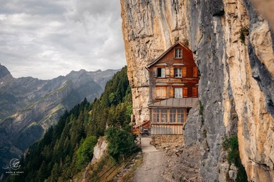
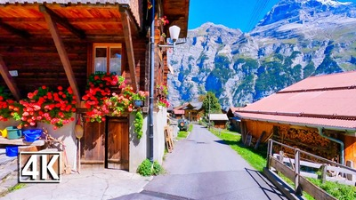

Hidden Gems of Switzerland
- Lauterbrunnen Valley
- Appenzell 
- Gimmelwald 
- Rothorn
- The Aletsch Glacier


Travel Tips for Switzerland
- Swiss Travel Pass
- Language
- Weather Preparedness
- Dining Etiquette
- Cash vs. Card
Consider getting a Swiss Travel Pass for unlimited travel on the public transport network, including trains, buses, and boats. It also grants you free or discounted entry to many museums.
Switzerland has four official languages: German, French, Italian, and Romansh. While many people speak English, learning a few basic phrases in the local language can enhance your experience.
The weather can change rapidly in the mountains. Pack layers and be prepared for rain, even in summer. Always check the weather forecast before heading out.
Swiss dining customs are generally informal. Tipping is appreciated but not mandatory; rounding up the bill or leaving small change is common.
While credit cards are widely accepted, it’s a good idea to carry some cash, especially in smaller towns or markets.